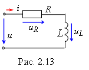

Рассмотрим последовательную RL-цепь (рис. 2.13), к зажимам которой приложено изменяющееся по гармоническому закону напряжение  .
.
Найдём ток (его амплитуду Im и начальную фазу Ψi).
 Согласно 2ЗК имеем
, где . Тогда
(2.29)
Получили линейное неоднородное дифференциальное уравнение первого порядка гармонической функцией в правой части.
Частное решение уравнения (2.29) будем искать в виде
 (2.30)
(2.30)
где φ = Ψu − Ψi; в данном случае Ψi = −φ.
Подставив (2.30) в (2.29), получим
или
(2.31)